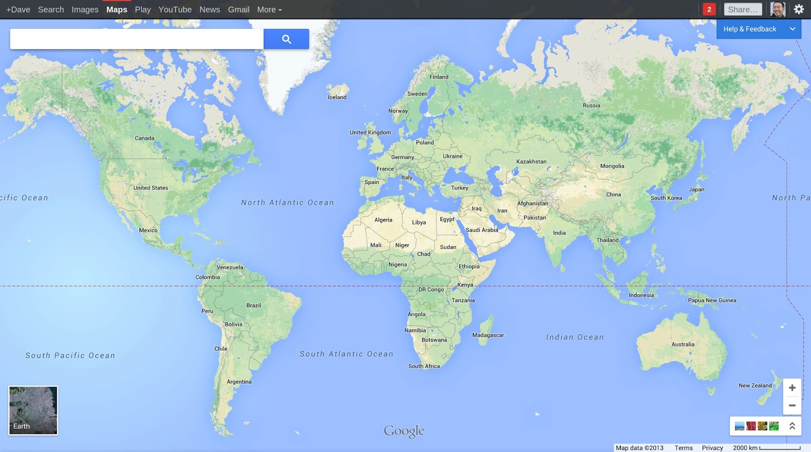

AGIC 2014
Online GIS Mapping without GIS Servers
Who dis?
James Fee
Business Development
Web Developer
Golfer
PHXGeo Founder
Who dat over there?

Sheldon McGee
Web Developer
Build in the physical world with wood
Arduino and Pi are cool
AFOL
GDG Organizer
Why No GIS Servers?
They are slow
They are can be expensive to license
They require you to use .NET, Java, C++
They are middleware
Not the future
Picture a normal GIS type of day...
Email arrives:
Dear GIS Guy,
I want to put data on a map and share it with people. I need this done immediately and it must look like the Google Maps.
Dan the Engineer
Setting up a GIS Server is a huge pain in the rear!
Steps to get GIS Server running
- Find setup disks or download from web
- Check with IT guy to see if server is available
- Install prerequisites such as TomCat
- Apply patches
- Try and get administration settings to work
- Attempt to add data sources for maps
- Realize you forgot to do step 4 above
- Then...
Dan the Engineer comes knocking...
So what choices do we have?
Tiling
TileMill + MBTiles
GeoServer and GeoWebCache
Esri ArcGIS
Mapnik (for those who roll their own)
Google/OSM/etc
But James...
Tiling only works for data that doesn't change.
That's what databases are for!
So let's use a spatial db to serve up the data!
GeoJSON
GeoJSON is a format for encoding a variety of geographic data structures.
{
"type": "Feature",
"geometry": {
"type": "Point",
"coordinates": [-112.46, 34.54]
},
"properties": {
"name": "Prescott, Arizona"
}
}
Here's the plan
The tech
- Node.js
- PostGIS
- Some JS mapping library
PostGIS
Google Maps
Time to get serious
Loading data into PostGIS
// Make your database PostGIS Aware
psql -U username -d mygisdb
CREATE EXTENSION POSTGIS;
// Use magic, free, cross-platform tool to export shape to sql
shp2pgsql -s 4326 AZBoundary.shp AZBoundary > sql/AZBoundary.sql
// import that into our database
psql -h localhost -d mygisdb -U postgres -f sql/AZBoundary.sql
// pull data out as GeOjSoN
SELECT ST_AsGeoJson(ST_Transform(b.geom,4326)) as geojson
Setting up Node.js
// Don't need the latest but most people install from source on Linux
wget -N http://nodejs.org/dist/node-latest.tar.gz
tar xzvf node-latest.tar.gz && cd node-v*
// On Red Hat/Cent/Fedora? Use epel
yum install http://dl.fedoraproject.org/pub/epel/6/x86_64/epel-release-6-8.noarch.rpm
yum install nodejs npm --enablerepo=epel
NO! Not that kind of setup!
Setting up Node.js
//get the repo . . . maybe put it in /var/www?
git clone https://github.com/tooshel/node-gis-server
//install dependancies . . . there are only two
npm install
Node.js
Line by line!
var pg = require('pg');
var geojson = require('../helpers/geojson');
var jsonp = require('../helpers/jsonp');
var settings = require('../settings');
module.exports.controller = function(app) {
/* enable CORS */
app.all('*', function(req, res, next) {
res.header('Access-Control-Allow-Origin', '*');
res.header('Access-Control-Allow-Headers', 'X-Requested-With');
next();
});
app.get('/vector/:schema/:table/:geom/intersect', function(req, res, next) {
var queryshape = ' {"type": "Point", "coordinates": [' + req.query['lng'] + ',' + req.query['lat'] + '] }';
var geom = req.params.geom.toLowerCase();
if ((geom != 'features') && (geom != 'geometry') && (geom != 'all')) {
res.status(404).send("Resource '" + geom + "' not found");
return;
}
var schemaname = req.params.schema;
var tablename = req.params.table;
var fullname = schemaname + '.' + tablename;
pg.connect(settings.database, function(err, client, done) {
// var spatialcol = 'wkb_geometry';
var spatialcol = 'geom';
var sql;
var coll;
if (geom == 'features') {
sql = 'select st_asgeojson(st_transform(' + spatialcol + ',4326)) as geojson, * from ' + tablename + ' where ST_INTERSECTS(' + spatialcol + ", ST_SetSRID(ST_GeomFromGeoJSON('" + queryshape + "'),4326));";
coll = {
type: 'FeatureCollection',
features: []
};
query = client.query(sql);
}
if (geom == 'all') {
sql = 'select st_asgeojson(st_transform(' + spatialcol + ',4326)) as geojson, * from ' + tablename;
coll = {
type: 'FeatureCollection',
features: []
};
query = client.query(sql);
}
query.on('row', function(result) {
var props = new Object;
if (!result) {
return res.send('No data found');
}
else {
if (geom == 'features' || geom == 'all') {
coll.features.push(geojson.getFeatureResult(result, spatialcol));
} else if (geom == 'geometry') {
var shape = JSON.parse(result.geojson);
coll.geometries.push(shape);
}
}
});
query.on('end', function(err, result) {
res.setHeader('Content-Type', 'application/json');
res.send(jsonp.getJsonP(req.query.callback, coll));
done();
});
});
});
app.get('/neighbor/:schema/:table/:geom/intersect', function(req, res, next) {
var queryshape = "'SRID=4326;POINT(" + req.query['lng'] +' ' + req.query['lat'] + ")'";
var geom = req.params.geom.toLowerCase();
if ((geom != 'features') && (geom != 'geometry')) {
res.status(404).send("Resource '" + geom + "' not found");
return;
}
var schemaname = req.params.schema;
var tablename = req.params.table;
var fullname = schemaname + '.' + tablename;
pg.connect(settings.database, function(err, client, done) {
var spatialcol = 'wkb_geometry';
var sql;
var coll;
if (geom == 'features') {
sql = 'SELECT ST_AsGeoJson(ST_Transform(b.' + spatialcol + ',4326)) as geojson, * from ' + tablename + ' as a, ' + tablename + ' as b where st_distance(a.' + spatialcol + ',b.' + spatialcol + ') < .00005 and ST_INTERSECTS(a.' + spatialcol + ', ST_GeographyFromText(' + queryshape + '));'
//sql = 'SELECT ST_AsGeoJson(ST_Transform(b.' + spatialcol + ',4326)) as geojson, * from ' + tablename + ' as a, ' + tablename + ' as b where st_touches(a.' + spatialcol + ',b.' + spatialcol + ') and ST_INTERSECTS(a.' + spatialcol + ', ST_GeographyFromText(' + queryshape + '));'
coll = {
type: 'FeatureCollection',
features: []
};
query = client.query(sql);
}
query.on('row', function(result) {
var props = new Object;
if (!result) {
return res.send('No data found');
}
else {
if (geom == 'features') {
coll.features.push(geojson.getFeatureResult(result, spatialcol));
} else if (geom == 'geometry') {
var shape = JSON.parse(result.geojson);
coll.geometries.push(shape);
}
}
});
query.on('end', function(err, result) {
res.setHeader('Content-Type', 'application/json');
res.send(jsonp.getJsonP(req.query.callback, coll));
done();
});
});
});
};
Hosting the Application
//Install pm2 (globally)
npm install -g pm2
//use pm2 to start the server, it's listening on port 3000
pm2 start server.js
//you should probably put it all behind nginx and proxy to 3000
//but in this case just used some iptables magic
iptables -t nat -A PREROUTING -i eth0 -p tcp --dport 80 -j REDIRECT --to-port 3000
Using GeoJSON with Google Maps:
Google Maps Javascript API v3 Data Layer
map.data.loadGeoJson('http://localhost/prescott.json');
Leaflet too!
L.geoJson(geojsonFeature).addTo(map);
And Openlayers . . .
var vectorSource = new ol.source.GeoJSON(.........
.loadGeoJson, .geoJson, .GeoJSON . . .
WE ARE ALL INDEPENDENT THINKERS
GIS without GIS Servers!
Cheap Hosting
PostGIS goodness
JavaScript simplicity
Load GIS data on Google Maps
The Demo
GIS in Google Maps
GIS in Google Maps (Local)
Cons?
More DOM elements . . . can be slow . . . but not forever
Mobile?
Fork it on GitHub
https://github.com/tooshel/node-gis-server/which was a fork of
https://github.com/ManoMarks/node-gis-server/
which was a fork of
https://github.com/geobabbler/node-gis-server/
Sharing is caring
END
Questions?
Or if you are shy catch us on twitter: